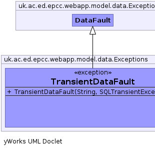
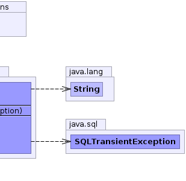

public class TransientDataFault extends DataFault
DataFault wrapping a SQLTransientException
This should only be thrown outside of a transation to
allow higher code logic to handle a non-rollback transient error|  |  |
| Constructor and Description |
|---|
TransientDataFault(java.lang.String str,
java.sql.SQLTransientException cause) |